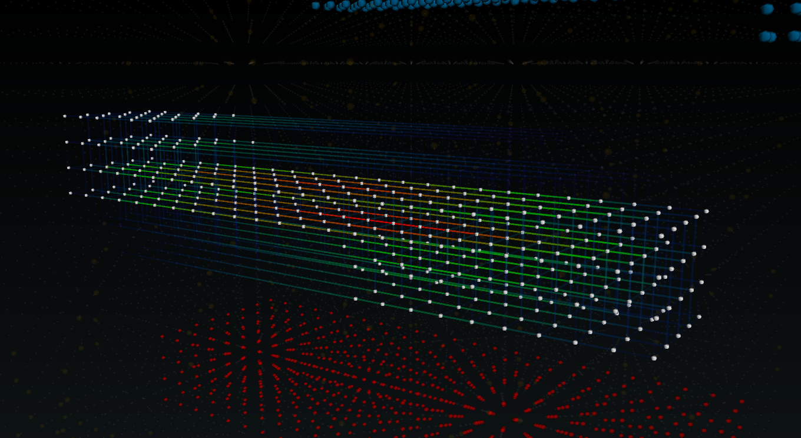
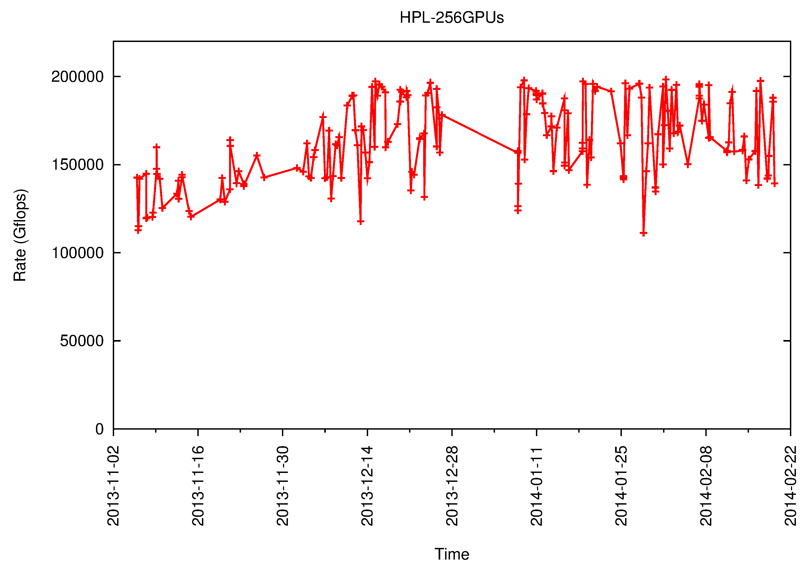
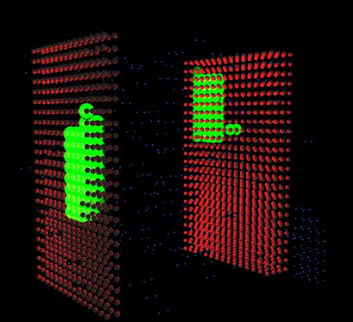
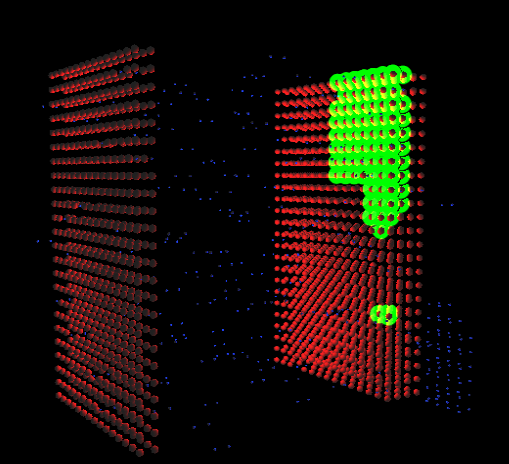
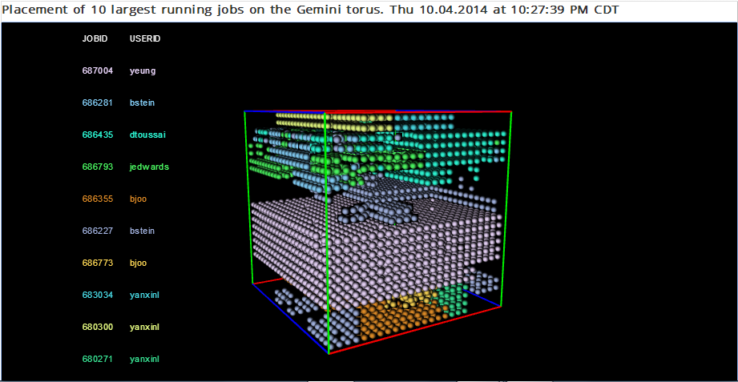
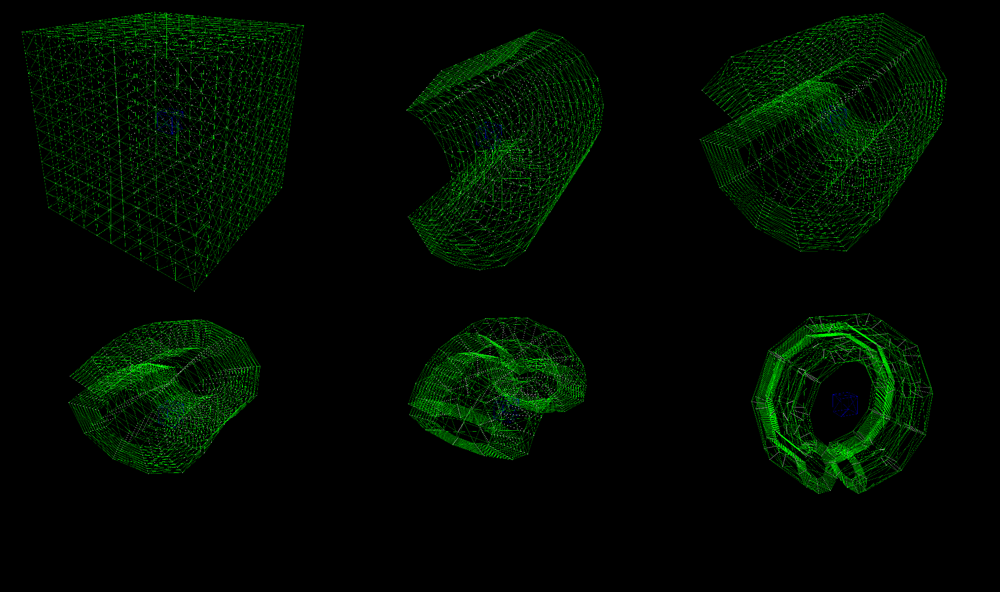

proof of concept

early prototype demonstrating node and link
visualization capabilities

multiple GPU-HPL runs performed over a period of
about three months

job node placement for the slowest running GPU-HPL
run (link)

job node placement for the fastest running GPU-HPL
run (link)

system utilization view showing the 10 largest jobs
(link)

torus bending experiment
(link)